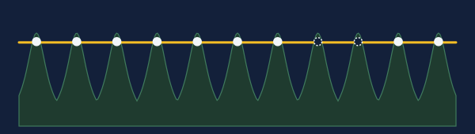
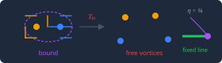
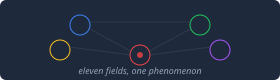
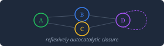
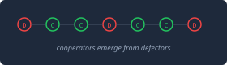

Web Annex
Interactive tutorials on the edges where systems change, and what it takes to tell where one is
Ticket hall
Edges are where behaviour changes: water boils, a magnet loses its pull, a dry forest suddenly burns. Near an edge a small push has a large effect, and unrelated systems start to behave alike. Some systems, people say, are poised: they seem to sit on their edge rather than fall off it. This site is one line of stations that shows what an edge is, how an edge can be a whole line, how you would tell, and what instrument it would take to check.

Board here: the ride, one line through the edge →Stations: 0 ticket hall · 1 the first edge · 2 hall of mirrors · 3 an edge with no cliff · 4 the grade changes · 5 the workshop · 6 the tunnel · 7 beads on a string · 8 the window that shows the edge coming · 9 the instrument · T the honest ending
Side trips



Other tutorials


How we work: a train-the-trainer program · what breaks when you run agent memory · governing your AI · the ABR kernel